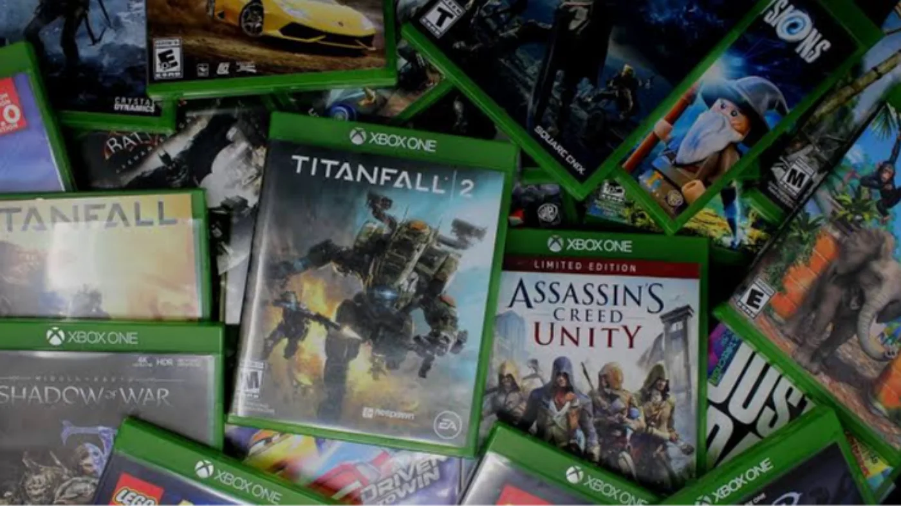
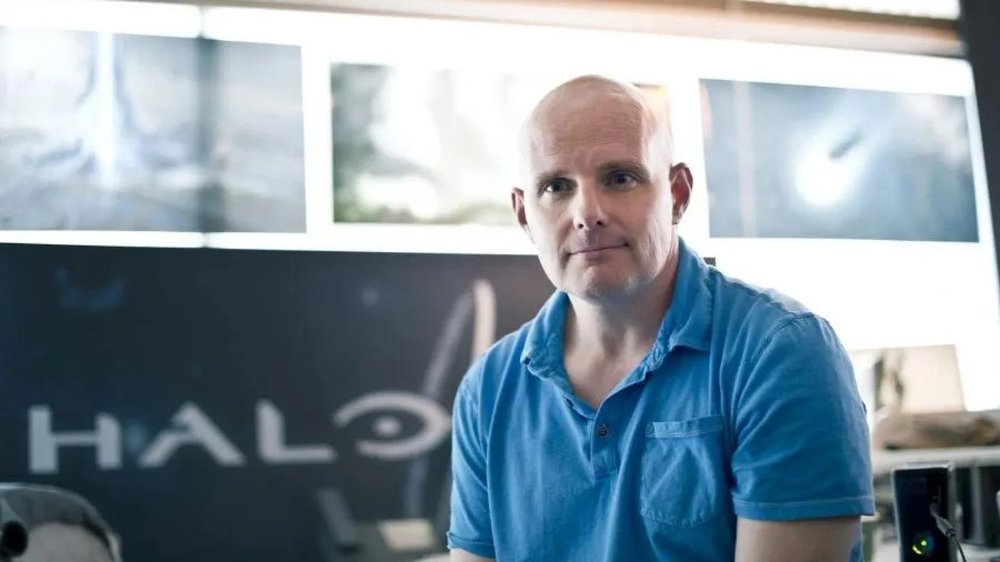

Luiso · 30 de septiembre de 2026 · 2 min de lectura
Microsoft comenzó a desplegar para todos los jugadores una de las funciones más particulares que había estado probando con los miembros de Xbox Insider: la posibilidad de obtener una licencia digital a partir de determinados juegos físicos de Xbox One y Xbox Series X.
El sistema había comenzado sus pruebas a finales de agosto y ahora está llegando progresivamente al resto de usuarios mediante una actualización del sistema.
El proceso es bastante sencillo:
El jugador introduce en su consola un disco físico compatible y Xbox permite reclamar una licencia digital correspondiente al juego.
Una vez realizado el proceso, el disco deja de ser necesario para iniciar esa versión digital, aunque el propietario puede conservarlo y seguir utilizándolo de la manera tradicional.
La diferencia resulta especialmente interesante en dispositivos que no tienen lector, como Xbox Series S, ya que la licencia digital permite jugar allí a determinados títulos que originalmente fueron adquiridos en formato físico.
También pueden activarse otras ventajas dependiendo del juego. Algunos títulos compatibles con Xbox Play Anywhere permiten acceder además a su versión para PC, mientras que determinados juegos pueden utilizarse mediante Xbox Cloud Gaming.
Uno de los aspectos más llamativos del sistema es que también puede funcionar con algunos juegos que ya fueron retirados de las tiendas digitales.
Entre los ejemplos mencionados aparecen Deadpool, F1 2021, Minecraft: Story Mode, Rock Band 4 y Titanfall.
Esto significa que, en determinados casos, un disco físico puede convertirse en una vía para recuperar el acceso digital a un juego que ya no puede comprarse normalmente desde la tienda.
Eso sí, no todos los discos son compatibles.
Xbox explicó que el sistema comenzó con miles de juegos y que continuará ampliando la cantidad de títulos admitidos. La comunidad también está recopilando qué juegos funcionan y cuáles todavía no.
Más allá de la comodidad, la función plantea una cuestión interesante para la preservación de videojuegos.
Un juego que desapareció de una tienda digital puede continuar siendo accesible para quien conserve su copia física y, si resulta compatible con este sistema, obtener además una licencia digital que amplíe las posibilidades de uso del título.
No convierte automáticamente cualquier disco de Xbox en una licencia digital, pero representa un paso poco habitual en una industria que cada vez depende más de las tiendas digitales.

30 de septiembre de 2026Con Halo ahora bajo la responsabilidad de Activision, Frank O'Connor, quien trabajó durante casi dos décadas en la franquicia, compartió varias posibilidades para su futuro. Entre sus recomendaciones está recuperar a veteranos despedidos de Bungie y Halo Studios y mantener uno de los elementos que considera fundamentales para la identidad de la saga: su sandbox.
30 de septiembre de 2026El exdirectivo de PlayStation, Shuhei Yoshida, habló sobre el futuro del hardware y consideró que Sony y Nintendo podrían prolongar la vida de PS5 y Switch 2. Su argumento está relacionado con el aumento del precio de los componentes y con la percepción de que muchos jugadores todavía están satisfechos con el hardware actual.